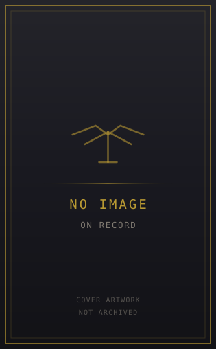

ERA OF RUIN

Author: Various, introduction by Jacob Youngs
Format: Anthology
A Siege of Terra anthology of eight stories about those who lived through the war and its aftermath. From Custodians and sorcerers to soldiers of the Imperial Army, its perspectives look beyond the battle for the Throneworld.
Introduction reviewed against Black Library’s description on 2026-09-27. The publisher page may contain spoilers.
Publication facts: publisher source, checked 2026-09-26.
Open this work in the interactive Archive to track reading progress and explore related works.
Take the three-question memory check for this work. The quiz contains story spoilers.